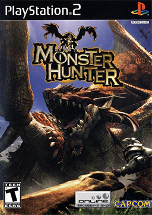
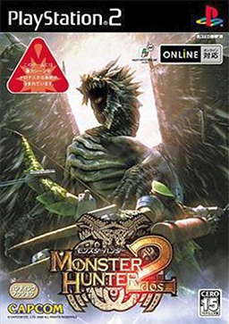
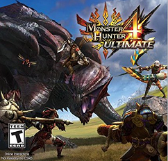
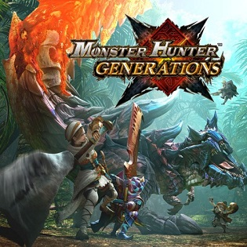

Below is a list of games in the Monster Hunter main series. Each generation has a number of entries that are derivative of the original release. While the first four main titles were numbered, the subsequent installments, starting with World, use a keyword instead of a number to reflect a central concept for that game.[16]

Monster Hunter - 2004
Monster Hunter is an action role-playing game for the PlayStation 2. The game was developed and published by Capcom. Monster Hunter was released in North America on September 21, 2004. It was remade and expanded in Monster Hunter G, which was released in Japan and was brought to North America and Europe as Monster Hunter Freedom for the PlayStation Portable.
Here is a jpg (Monster Hunter) image of the game cover of the first MH.

Monster Hunter 2 - 2009
Monster Hunter 2 has an improved weapon tree and upgradeable armors. As in all Monster Hunter games, armor pieces can be worn to obtain skills and abilities. A new feature in Monster Hunter 2 is the use of gems. Gems add skill points to complement those added by armor and weapons. Gems are created by combining ore and/or monster parts. Gems can be attached and detached from armor and weapons that have special gem slots. Along with the various species of monster returning from the first Monster Hunter, Monster Hunter 2 contains many new monsters
Here is a jpg (Monster Hunter) image of the game cover of the MH2.
Monster Hunter Portable 2nd G - 2009
Monster Hunter Portable 2nd G is a 2009 video game in the Monster Hunter franchise for PlayStation Portable and iOS.
MHP2G has more missions, equipment, and monsters than Monster Hunter Freedom 2, and a new Felyne fighter to help the player on their quests.
The introduction of new monsters such as the Ukanlos have been put into the game with even more creatures than the last version of Monster Hunter Freedom 2 on the PSP system.
Here is a jpg (Monster Hunter) image of the game cover of the MHP2G.
Monster Hunter Tri (also known as Monster Hunter 3)- 2010
The game was originally planned to be a PlayStation 3 title, but was cancelled due to high development costs for that console. Capcom instead decided to develop it for the Wii.
Monster Hunter 3 Ultimate re-introduces the underwater combat that was left out of the Japanese-only sequel to Tri, Monster Hunter Portable 3rd. This is the first time that the gunlance, bow, hunting horn and dual swords have been featured in underwater combat. The game also reintroduces G rank, a level above high rank that features a new set of quests, harder monsters and improved weapons and armor. It was the first time G rank was present in a Monster Hunter game since Monster Hunter Freedom Unite, and the first time ever for a third generation Monster Hunter title.
Here is a jpg (Monster Hunter) image of the game cover of the Monster Hunter Tri.

Monster Hunter 4 - 2013
Monster Hunter 4[a] is an action role-playing video game developed and published by Capcom. It is the fourth game in the Monster Hunter series and the second to be released on the Nintendo 3DS.
New to Monster Hunter 4 is movement and combat that places more emphasis on three-dimensional movement. Walls can be climbed more fluidly, and players can use height advantages to jump on and attack or even mount creatures. The game also eliminates underwater sections that were present in Monster Hunter 3.[3] The monsters are terrain-aware and use the environment to their advantage. Two new weapons have been added: the Insect Glaive and the Charge Blade.
Here is a jpg (Monster Hunter) image of the game cover of the Monster Hunter 4.

Monster Hunter X - 2015
Monster Hunter Generations[a] is an action role-playing game developed and published by Capcom for the Nintendo 3DS.
Monster Hunter Generations features new special moves known as Hunting Arts. These moves require the player to wait for the moves to charge up during the course of a hunt before they can be activated. Once ready, the player can activate them at any time, after which they have to wait for them to charge up again before a second use. The Arts have different effects such as dealing massive damage, providing buffs, or healing allies.[2][5] The game also introduces a system called "Hunting Styles".[6] This system adds different attack styles for a weapon. Each weapon type in the game will have four distinct forms.[2][6] The Guild Style is a balanced and basic style akin to combat in previous games of the series. The Striker Style is less technical but emphasises the use of Hunting Arts letting the player set up three special attacks.
Here is a jpg (Monster Hunter) image of the game cover of the Monster Hunter X.
Monster Hunter world - 2015
Monster Hunter: World was released worldwide for PlayStation 4 and Xbox One in January 2018, with a Microsoft Windows version following in August 2018.
World features a story mode offered through the quest system. Unlike previous games, where the story mode led the player through and to complete the "Low Rank" quests, before opening the game to more difficult "High Rank" quests without a story driver, World will have a narrative that continues into the "High Rank" quests.[7] The game's complete story mode is estimated to take between 40 and 50 hours
Here is a jpg (Monster Hunter) image of the game cover of the Monster Hunter world.
Monster Hunter Rise - 2021
Monster Hunter Rise[a] is an action role-playing game developed and published by Capcom for the Nintendo Switch.
Rise uses the same seamless map approach introduced in Monster Hunter: World unlike the zoned area approach typical of earlier games in the series.
Rise features both single player and local and online multiplayer modes with up to four hunters in a group.
Rise introduces Rampage, a survival mode where the players must defend the base village from several attacking monsters. Prior to and during the attack, the players can set up siege weapons and instruct non-player characters to attack the monsters while the players attack the monsters directly.[4]
Here is a jpg (Monster Hunter) image of the game cover of the Monster Hunter rise.